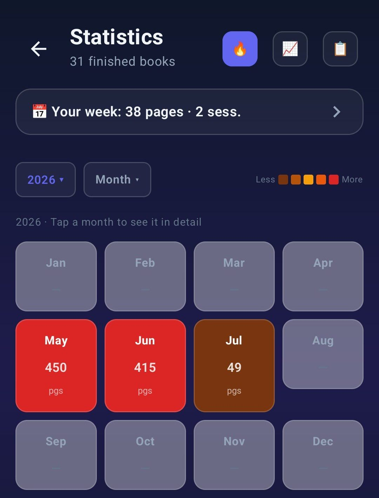

Feature
Reading Statistics for Android
Pages per minute, reading heatmap, monthly comparisons, yearly recap. Data you can actually read.
What gets tracked
Every session logs pages, minutes and the book. From that data Lecturameter derives:
- Reading pace in pages per minute, per session, per book and overall
- Reading time per day, week, month and year
- Pages per day, week, month and year
- Distinct reading days, current streak, longest streak
- Books started and finished, by month and by year
- Genres, formats and ratings
- Predictions of how long a book will take at your current pace
Heatmap
A calendar-style heatmap shows the days you read and how much. Tap a day and you see the sessions from that day. Tap a session and you get the book. It is a shortcut back into your own history.

Monthly stats
Every month you get a page with your pace, your pages, your reading days, your top books and how you compare with the month before. It is the closest thing to a monthly recap without waiting for December.

Yearly recap
Wrapped is the yearly recap that unlocks on December 26. It groups your reading year into cards, remembers the songs of the moment if you want, and can be exported as a shareable image. You get one honest, quiet recap of your year of reading.
What Lecturameter does not do
No AI predictions. No book recommendations. No leaderboards. The statistics measure what you did. They do not judge it.
Frequently asked questions
Try it on Android
Related: Reading Timer · Reading Tracker · Goodreads Alternative · Blog